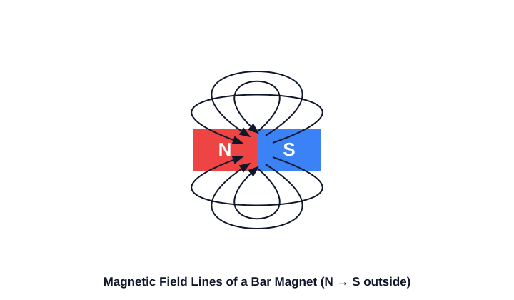
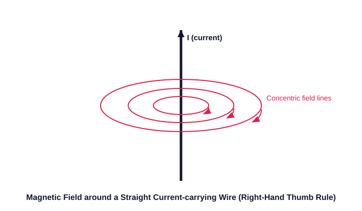
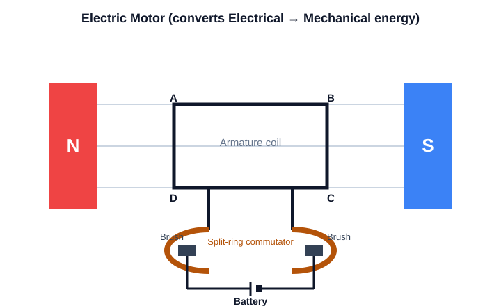
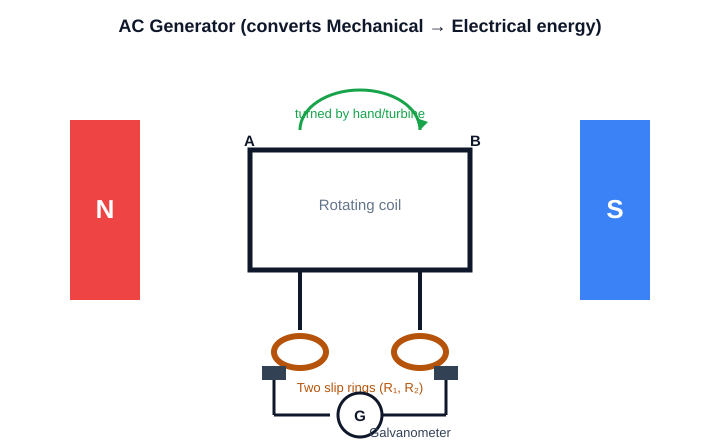
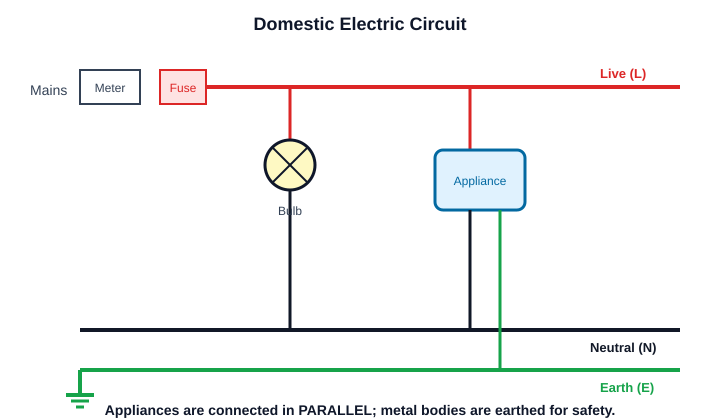

1820 ਵਿੱਚ ਡੈੱਨਮਾਰਕ ਦੇ ਅਧਿਆਪਕ ਹੰਸ ਕ੍ਰਿਸ਼ਚੀਅਨ ਓਰਸਟੈੱਡ ਨੇ ਲੈਕਚਰ ਦੌਰਾਨ ਹੈਰਾਨ ਕਰ ਦੇਣ ਵਾਲੀ ਚੀਜ਼ ਵੇਖੀ। ਜਦੋਂ ਵੀ ਉਹ ਬਿਜਲਈ ਧਾਰਾ ਚਾਲੂ ਕਰਦਾ, ਨੇੜੇ ਪਈ ਕੰਪਾਸ ਦੀ ਸੂਈ ਹਿੱਲ ਜਾਂਦੀ। ਇਸ ਛੋਟੀ ਜਿਹੀ ਹਰਕਤ ਨੇ ਪਹਿਲੀ ਵਾਰ ਸਾਬਤ ਕੀਤਾ ਕਿ ਬਿਜਲੀ ਅਤੇ ਚੁੰਬਕਤਾ ਡੂੰਘੇ ਜੁੜੇ ਹੋਏ ਹਨ। ਵਿਗਿਆਨੀਆਂ ਨੇ ਜਾਣਿਆ ਕਿ ਧਾਰਾ ਵਾਲੀ ਤਾਰ ਦੀ ਕੁੰਡਲੀ ਚੁੰਬਕ ਵਾਂਗ ਵਿਹਾਰ ਕਰਦੀ ਹੈ ਤੇ ਇਸ ਬਿਜਲ-ਚੁੰਬਕ ਨੂੰ ਮਰਜ਼ੀ ਨਾਲ ਚਾਲੂ-ਬੰਦ ਕੀਤਾ ਜਾ ਸਕਦਾ ਹੈ।
In 1820 the Danish teacher Hans Christian Oersted noticed something astonishing during a lecture. Every time he switched on a current, a nearby compass needle twitched. This tiny movement proved for the first time that electricity and magnetism are deeply connected. Scientists soon learned that a coil of wire carrying current behaves like a magnet, and this electromagnet can be switched on and off at will.
ਓਰਸਟੈੱਡ ਨੇ ਵਿਖਾਇਆ ਕਿ ਧਾਰਾ ਚੁੰਬਕਤਾ ਬਣਾਉਂਦੀ ਹੈ; ਮਾਈਕਲ ਫ਼ੈਰਾਡੇ ਨੇ ਉਲਟਾ ਸਵਾਲ ਪੁੱਛਿਆ — ਕੀ ਚੁੰਬਕਤਾ ਧਾਰਾ ਬਣਾ ਸਕਦੀ ਹੈ? ਉਸ ਨੇ ਲੱਭਿਆ ਕਿ ਜਦੋਂ ਕੋਈ ਚੁੰਬਕ ਤਾਰ ਦੀ ਕੁੰਡਲੀ ਦੇ ਨੇੜੇ ਹਿਲਾਇਆ ਜਾਂਦਾ ਹੈ, ਤਾਂ ਕੁੰਡਲੀ ਵਿੱਚ ਬਿਜਲਈ ਧਾਰਾ ਪੈਦਾ ਹੁੰਦੀ ਹੈ — ਇਸ ਨੂੰ ਬਿਜਲ-ਚੁੰਬਕੀ ਪ੍ਰੇਰਣ ਕਹਿੰਦੇ ਹਨ। ਇਸੇ ਸਿਧਾਂਤ ਉੱਤੇ ਜਨਰੇਟਰ ਕੰਮ ਕਰਦਾ ਹੈ, ਜੋ ਗਤੀ ਦੀ ਊਰਜਾ ਨੂੰ ਬਿਜਲੀ ਵਿੱਚ ਬਦਲ ਕੇ ਦੁਨੀਆਂ ਦੀ ਬਹੁਤੀ ਬਿਜਲੀ ਪੈਦਾ ਕਰਦਾ ਹੈ।
Oersted showed that current makes magnetism; Michael Faraday asked the reverse — can magnetism make current? He found that moving a magnet near a coil of wire produces a current in the coil, an effect called electromagnetic induction. The generator works on this idea, turning the energy of motion into electricity and producing most of the world's power.
ਇੱਕ ਕਲਾਸਰੂਮ ਦੇ ਹਾਦਸੇ ਵਜੋਂ ਸ਼ੁਰੂ ਹੋਈ ਖੋਜ ਆਧੁਨਿਕ ਦੁਨੀਆਂ ਦਾ ਇੰਜਣ ਬਣ ਗਈ। ਜਦੋਂ ਧਾਰਾ ਵਾਲੀ ਤਾਰ ਨੂੰ ਚੁੰਬਕੀ ਖੇਤਰ ਵਿੱਚ ਰੱਖਿਆ ਜਾਂਦਾ ਹੈ, ਤਾਂ ਉਸ ਉੱਤੇ ਬਲ ਲੱਗਦਾ ਹੈ — ਇਸੇ ਬਲ ਨਾਲ ਬਿਜਲਈ ਮੋਟਰ ਘੁੰਮਦੀ ਹੈ। ਇਹ ਮੋਟਰਾਂ ਪੱਖੇ ਚਲਾਉਂਦੀਆਂ ਹਨ, ਕਬਾੜ ਵਿੱਚ ਵੱਡੇ ਚੁੰਬਕ ਕਾਰਾਂ ਚੁੱਕਦੇ ਹਨ, ਤੇ ਜਨਰੇਟਰ ਬਿਜਲੀ ਬਣਾਉਂਦੇ ਹਨ। ਘਰੇਲੂ ਸਰਕਟਾਂ ਵਿੱਚ ਅਰਥ ਤਾਰ ਇੱਕ ਸੁਰੱਖਿਆ ਹੈ ਜੋ ਲੀਕ ਹੋਈ ਧਾਰਾ ਨੂੰ ਧਰਤੀ ਵੱਲ ਭੇਜ ਕੇ ਸਾਨੂੰ ਬਿਜਲੀ ਦੇ ਝਟਕੇ ਤੋਂ ਬਚਾਉਂਦੀ ਹੈ।
What began as a classroom accident became the engine of the modern world. When a current-carrying wire sits in a magnetic field, it feels a force — the very force that spins an electric motor. These motors run fans, giant magnets lift cars in scrapyards, and generators make electricity. In home circuits the earth wire is a safety line that sends leaked current into the ground, protecting us from electric shocks.
A magnetic field is the region around a magnet where its force can be felt. Its direction and strength are shown by magnetic field lines.

Hans Christian Oersted discovered that a compass needle deflects near a current-carrying wire, proving that electricity creates magnetism.
Task: Find the critical physics error in this diagram representation and tap it to fix it.
Forms concentric circles. Use the Right-Hand Thumb Rule: Point thumb in direction of current, fingers curl in direction of magnetic field.
As you move to the center of the loop, the field lines become straight and parallel.
A straight current-carrying wire produces concentric circular magnetic field lines around it.

Every part of the loop adds field in the same direction at the centre, so the field lines at the centre are nearly straight and perpendicular to the loop.
A Solenoid is a coil of many circular turns of insulated copper wire.
Putting a current-carrying wire inside an external magnetic field creates a physical FORCE pushing the wire. (This is how motors work!).
Stretch thumb, forefinger, and middle finger at right angles: Forefinger = Magnetic Field, Center finger = Current, Thumb = Thrust/Motion.
| Feature | Electromagnet | Permanent Magnet |
|---|---|---|
| Magnetism | Temporary (only when current flows) | Permanent |
| Strength | Strong & adjustable | Fixed |
| Core used | Soft iron | Steel |
An electric motor converts electrical energy into mechanical (rotational) energy, using the force on a current-carrying conductor in a magnetic field.

| Part | Function |
|---|---|
| Armature coil | Rotates inside the magnetic field |
| Split-ring commutator | Reverses the current every half turn to keep rotation continuous |
| Brushes | Carry current between the coil and the battery |
Discovered by Michael Faraday: a changing magnetic field through a coil induces (produces) a current in it.
| Feature | Left-Hand Rule | Right-Hand Rule |
|---|---|---|
| Used in | Electric motor | Electric generator |
| Finds | Direction of force / motion | Direction of induced current |
| You are given | Current & field | Motion & field |
Converts mechanical energy into electrical energy using electromagnetic induction.

| Feature | AC Generator | DC Generator |
|---|---|---|
| Rings used | Two slip rings | Split-ring commutator |
| Output | Alternating current | Direct current |
Click a property, then click the device it describes. (ਵਿਸ਼ੇਸ਼ਤਾ ਚੁਣੋ, ਫਿਰ ਸਹੀ ਯੰਤਰ 'ਤੇ ਕਲਿੱਕ ਕਰੋ।)
| Feature | AC | DC |
|---|---|---|
| Direction | Reverses periodically | One direction only |
| In India | Changes 50 times/second (50 Hz) | Constant |
| Source | Generators, mains supply | Cells, batteries |
Homes receive AC power at 220V. You must clearly differentiate the two main electrical hazards:
| Short Circuiting (ਸ਼ਾਰਟ ਸਰਕਟ) | Overloading (ਓਵਰਲੋਡਿੰਗ) |
|---|---|
| Happens if plastic insulation melts and the Live wire touches the Neutral wire directly. | Happens when too many high-power appliances are plugged into a single socket. |
| Resistance drops to almost zero, causing a massive, immediate current spike and potential fire. | The total current drawn exceeds the capacity of the wires, slowly overheating them. |
Power reaches homes through three wires:
| Wire | Insulation colour | Role |
|---|---|---|
| Live | Red / Brown | Carries current (high potential) |
| Neutral | Black / Blue | Return path for current |
| Earth | Green | Safety — connects to the ground |

Match each device or field to the correct rule/fact. (ਹਰ ਜੋੜੀ ਨੂੰ ਮਿਲਾਓ।)
Tap each rule to reveal what it finds and how to point your fingers. (ਹਰ ਨਿਯਮ ਟੈਪ ਕਰੋ।)
Solve on paper, then check. Field is perpendicular to the current. (ਪਹਿਲਾਂ ਹੱਲ ਕਰੋ, ਫੇਰ ਜਾਂਚੋ।)
Every "Say It Back" question in this deck has been formatted for Anki, with both English and Punjabi answers. (ਇਸ ਡੈੱਕ ਵਿੱਚ ਹਰ "Say It Back" ਸਵਾਲ ਅੰਕੀ ਲਈ ਤਿਆਰ ਹੈ।)